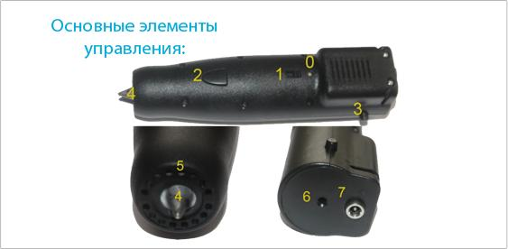

Как начать рисовать?
1. Подключить адаптер питания к 3D ручке.
2. Дождаться, пока КРАСНЫЙ индикатор сменит цвет на ЗЕЛЕНЫЙ.
3. Нажать на кнопку зарядки пластика и вставить необходимое
количество и цвет.
4. Выбрать скорость выхода пластика из экструдера переключателем.
5. Нажать на кнопку выхода пластика из экструдера.
Обратите внимание, пластик выходит из ручки нагретым до 250 градусов.
Предупредите детей, чтобы были предельно осторожными.
Пластик не токсичен и абсолютно безопасен.
РУЧКА ИМЕЕТ АВТОМАТИЧЕСКУЮ ЗАЩИТУ ОТ ПЕРЕГРЕВА.
Часто задаваемые вопросы:
1. Есть ли гарантия? - гарантия на все 3D ручки - 1 год с момента покупки.
2. Почему коробка с ручкой открыта? - для того, чтобы
гарантировать качество продаваемых изделий, перед продажей мы
еще раз включаем 3D ручки в розетку и проверяем их работоспособность.
3. Со скольки лет можно использовать?! - рекомендуем к
самостоятельной работе с 12ти лет. Под присмотром
взрослых - возраст не ограничен.

0. Индикатор питания - имеет два цвета - красный и зеленый.
Красный - идет нагрев, зеленый - можно работать.
1. Переключатель режимов Выкл/Медл/Быстр (OFF/LOW/HIGH) -
регулирует скорость подачи пластика из экструдера.
2. Кнопка подачи пластика из экструдера.
3. Кнопка для зарядки пластика в 3D ручку. Нажать на кнопку,
засунуть пластик, отпустить.
4. Экструдер для подачи расплавленного пластика из ручки.
5. Отверстия выхода холодного воздуха для охлаждения
расплавленного пластика.
6. Отверстие для подачи пластика в 3D ручку.
7. Гнездо для подключения адаптера питания (идет в комплекте).